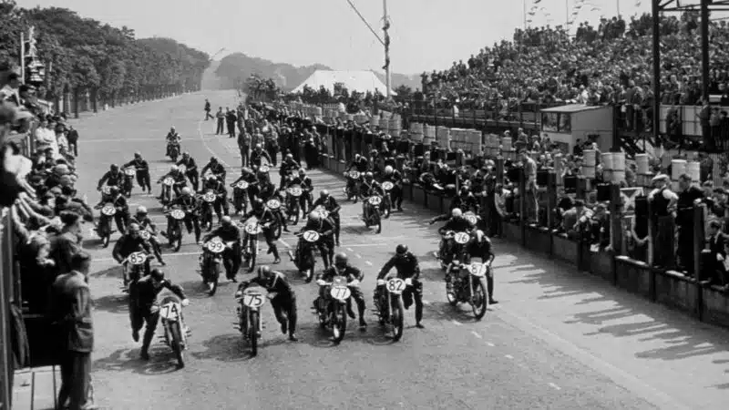
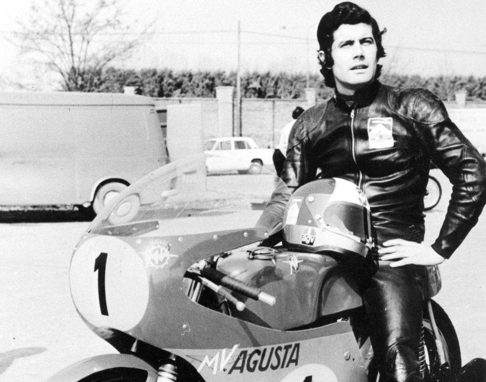
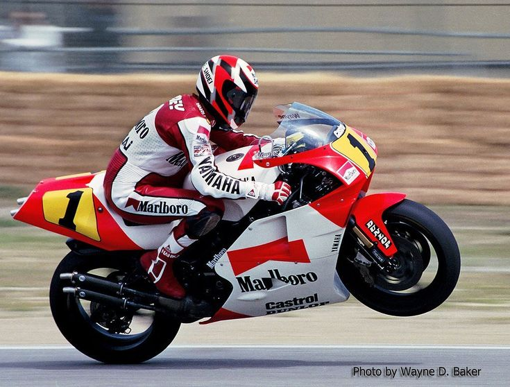
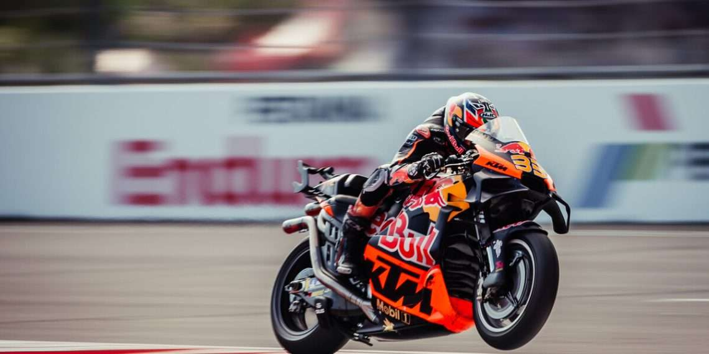

Los Orígenes (1949)
El Campeonato del Mundo de Motociclismo comenzó oficialmente en 1949, siendo el certamen mundial de deportes de motor más antiguo. En sus inicios, las categorías se definían por la cilindrada: desde los pequeños motores de 50cc hasta la categoría reina de 500cc.

La era "Balas de plata" (1960-1975)
En estas décadas, las marcas japonesas revolucionaron el mundial con motores de ingeniería asombrosa que desafiaron el dominio europeo. Fue la época dorada de Giacomo Agostini, donde las motos plateadas se volvieron iconos de velocidad pura.

La era de "Las bestias de 500cc" (1980-2001)
Esta etapa fue dominada por motores de 2 tiempos, máquinas salvajes sin electrónica que exigían un valor extremo a los pilotos. Leyendas como Mick Doohan y Kevin Schwantz se consagraron al domar prototipos conocidos por su violencia al acelerar.

La era de "MotoGp" (2002-actualidad)
En 2002, la categoría reina se transformó al introducir motores de 4 tiempos y 990cc, marcando el inicio de la denominación MotoGP. Esta etapa trajo consigo una revolución electrónica y aerodinámica sin precedentes.

Hacia la Sustentabilidad (2026 - Futuro)
El mundial de motociclismo se prepara para un cambio radical para el 2027 con nuevas regulaciones que buscan una mayor sostenibilidad y seguridad. Esta etapa marcará la llegada de combustibles 100% sintéticos.